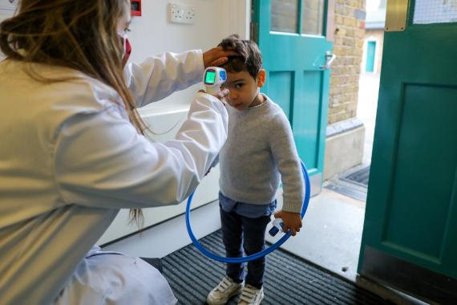
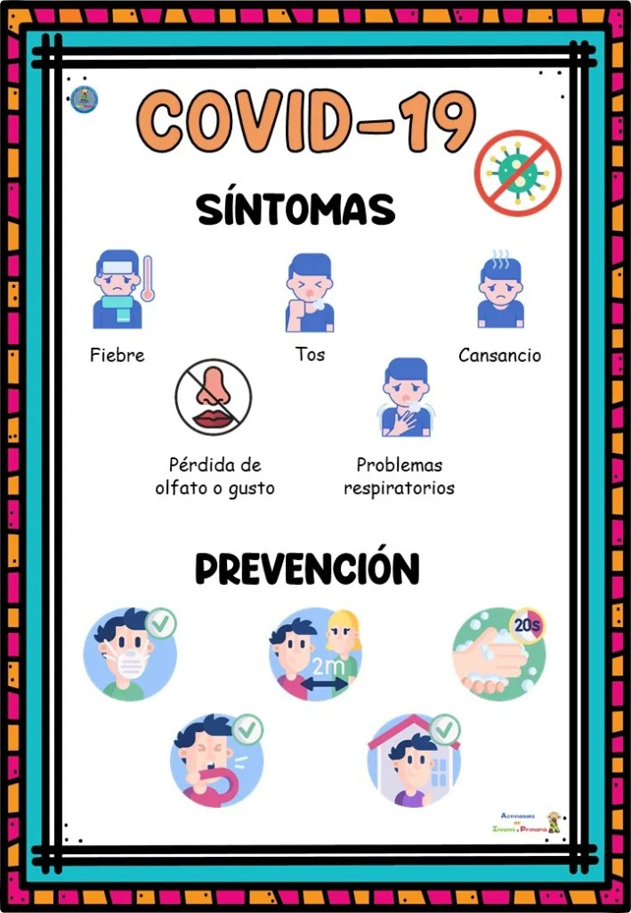

Educacion durante el covid subir
Las disrupciones provocadas por la COVID-19 en la vida cotidiana han provocado que hasta 40 millones de niños en todo el mundo hayan perdido tiempo de enseñanza en su primer año de educación preescolar, un año fundamental. Por lo tanto, han perdido acceso a un entorno estimulante y enriquecedor, oportunidades de aprendizaje, interacción social y, en algunos casos, nutrición adecuada.
En los sistemas de enseñanza y formación técnica y profesional, las vulnerabilidades, como bajos niveles de digitalización y deficiencias estructurales de larga data, han aflorado debido a la crisis. Las disrupciones en el lugar de trabajo dificultan la puesta en práctica de programas y modos de aprendizaje basados en el empleo, que son clave para lograr un sistema de enseñanza y formación técnica funcional y adecuado a las necesidades del mercado.

GARANTIZAR LA SEGURIDAD DE TODOSsubir
Las pérdidas en materia de aprendizaje ocasionadas por los cierres prolongados de las escuelas amenazan muchos resultados educativos. Por varias razones, no podemos volver al mundo de antes.
